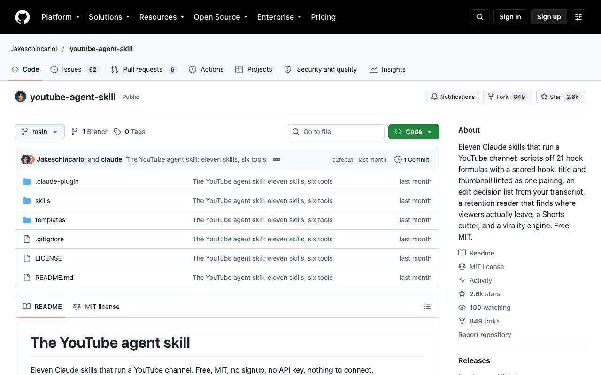

Qué es
Es un proyecto de código abierto que añade a Claude once skills para llevar un canal de YouTube: una para el guion, otra para revisar título y miniatura, otra para decidir qué cortar, otra para leer la retención, y así hasta once. Es gratis, con licencia MIT, sin registro, sin clave de API y sin conectar nada. Su propia descripción lo resume en una frase: escribe, pero no sube nada solo. Tú grabas y tú publicas.
Si quieres entender primero qué es una skill, mira cómo crear una skill de Claude Code. Aquí vamos directos a lo que hace esta.
Las 11 skills y qué hace cada una
Cada una es un comando que escribes en Claude. Estas son las once, sacadas de la documentación del repositorio:
/yt-scriptConvierte una idea en un guion. Escribe cinco ganchos con 21 fórmulas, los puntúa y luego redacta el guion hablado con las marcas de retención./yt-packageRevisa el título y la miniatura como una pareja: si se corta, si repiten lo mismo o si son vagos./yt-editConvierte la transcripción en una lista de cortes con tiempos: silencios, muletillas y tomas repetidas. Imprime los cortes, no toca el vídeo./yt-commentOrdena los comentarios en cuatro montones y redacta respuestas con tu voz. Te dice cuál fijar./yt-planUna semana que cabe en las horas que de verdad tienes: un vídeo ancla, uno barato y tres Shorts./yt-viralQué funciona en tu tema, ordenado por cuántas veces supera cada vídeo la mediana de su propio canal, no por el tamaño del canal./yt-retentionLee la exportación de retención de YouTube: la fuga del gancho, los acantilados y la pendiente, y qué cambiar./yt-shortsEncuentra los Shorts que ya hay dentro de un vídeo largo y escribe una primera frase nueva para cada uno./yt-seoLa descripción, las etiquetas que valen la pena y las tres búsquedas que este vídeo debería ganar./yt-chaptersCapítulos a partir de la transcripción, comprobados con las reglas de YouTube para que se muestren./yt-auditEl canal entero, con un único arreglo prioritario en vez de veinte.La más interesante: los ganchos con nota
/yt-script no escribe un solo arranque: te da cinco ganchos y los puntúa con un script (hookscore.py) antes de que gastes una toma. Mide cinco cosas, de 0 a 100: concreción, si te habla a ti, lo que te juegas, curiosidad y brevedad. La nota final pesa un 60 % la media y un 40 % la propiedad más floja, porque un gancho con cuatro cosas buenas y una muerta no funciona. Por encima de 72 es «fuerte» y por encima de 55 «aceptable».
Es una regla mecánica, no una predicción de visitas: sirve para ordenar tus opciones, no para garantizar que el vídeo funcione. Las 21 fórmulas (la estadística, el error, el giro contrario, la pregunta…) están en un archivo que puedes leer y cambiar.
La que más cambia cómo editas: leer la retención
Cuando YouTube te da la gráfica de retención, /yt-retention la lee contigo: en qué segundo se va la gente, cuánto cae al principio y qué estabas diciendo justo ahí. La idea es dejar de adivinar por qué un vídeo se cae y mirar la frase concreta. Necesita que le pases tu exportación de retención, y funciona mejor con seis de sus herramientas en Python, que solo se usan en Claude Code.
Cómo instalarla
Hay tres vías y cualquiera sirve. La más fácil es pegar el enlace en Claude y pedirle que la instale:
https://github.com/Jakeschincariol/youtube-agent-skillPégalo en Claude y añade: «Instala esta skill y confirma que /yt-script funciona».git clone https://github.com/Jakeschincariol/youtube-agent-skill.gitPara Claude Code: clona el repositorio…cp -r youtube-agent-skill/skills/yt-* ~/.claude/skills/…y copia las carpetas de las skills a tu carpeta de skills./plugin marketplace add Jakeschincariol/youtube-agent-skillOtra vía en Claude Code: añadir el plugin…/plugin install youtube-agent…e instalarlo.Después dedica diez minutos a la plantilla voice.md (cópiala a ~/.claude/youtube/voice.md y rellénala, o pásale tres vídeos tuyos y dile «escribe mi voice.md con esto»). Todas las skills la leen, y aquí importa más que en ningún sitio porque el guion lo vas a decir en voz alta.
Sin Claude Code puedes pegar el contenido de un SKILL.md al principio de un chat y funciona como un modo, pero pierdes las herramientas en Python, que son gran parte del valor de /yt-script, /yt-retention y /yt-edit.
Lo que no hace
- No edita vídeo.
/yt-editimprime la lista de cortes; los aplicas tú en tu editor. - No publica. Nada se sube hasta que lo haces tú.
- La nota de un gancho no es una promesa de visitas. Es una puntuación por reglas.
- Es un proyecto de una persona. Tiene unas 2.600 estrellas, pero al revisarlo (24 de octubre de 2026) solo tenía un commit y 62 incidencias abiertas, así que no esperes soporte ni cambios constantes.
- Lo que ves aquí lo hemos leído en su documentación, no lo hemos probado con un canal real. Prueba
/yt-scriptcon una idea tuya antes de fiarte del resto.
Preguntas frecuentes
¿Qué es el youtube-agent-skill?
Un proyecto de código abierto con once skills para Claude que ayudan a llevar un canal de YouTube: guion con ganchos puntuados, revisión de título y miniatura, lista de cortes, lectura de retención, Shorts, SEO, capítulos, comentarios, plan semanal, ideas que funcionan y auditoría.
¿Es gratis?
Sí. Tiene licencia MIT, no pide registro ni clave de API y no hay nada que conectar. Necesitas Claude para usar las skills, con su propio plan.
¿Publica los vídeos por mí?
No. Escribe y propone, pero no sube nada: tú grabas, tú editas y tú publicas.
¿Edita el vídeo?
No. /yt-edit convierte la transcripción en una lista de cortes con minutos (silencios, muletillas y tomas repetidas) y no toca el archivo de vídeo.
¿Cómo se instala?
Pega el enlace del repositorio en Claude y pídele que la instale, o en Claude Code clona el repositorio y copia las carpetas yt-* a ~/.claude/skills, o usa el plugin con /plugin marketplace add Jakeschincariol/youtube-agent-skill.
¿Qué mide la nota de un gancho?
Cinco propiedades de 0 a 100: concreción, si te habla a ti, lo que te juegas, curiosidad y brevedad. La nota final pesa un 60 % la media y un 40 % la propiedad más débil. Es una regla mecánica para ordenar opciones, no una predicción de visitas.